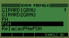
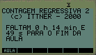
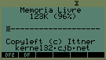
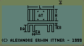

Some programs I wrote for the HP 48 calculator, when I was a heavy user of it. Some may still useful, but I never tested it with the newer generations (HP49, HP49 II, HP50, etc.)

A nice equation/formula manager. It borrows the interface from the Equation Library, integrates itself to the Solver and the Equation Viewer, and allows sending/receiving formulas between two calculators using the infrared interface. It takes up just 2077 bytes when installed in the calculator!
A program that removes the boring NUL characters from strings.

A joke program that counts down to the end of the class ;) Nice program of bygone years of youth.
Another joke. Troubled relationship with your calculator? This program has the solution: it will make your calculator say "Good day" after being turned on and "Good bye" before be turned off.

A program to show the current memory usage. After installed, it uses just 442 bytes of memory.

Calculates the surface area of a heat sink. Not particularly useful, but shows how to insert a GROB into a UserRPL program.
A(nother) program that avoid accidental deleting of variables. It uses the User Keys to intercept deleting attempts and asks for a confirmation.